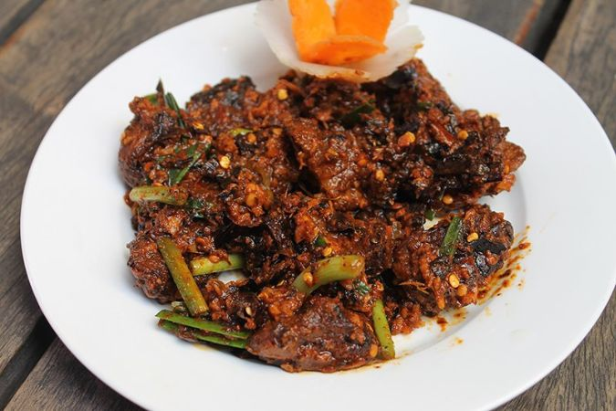

Buff Choila Recipe

It is a popular non-veg food in Nepal, especially in the Newari
community. It is served with beaten rice, black-eyed beans, potato
pickle, cooked vegetables and many other tradiotional Newari items.
Ingredients
- Boneless buff meat - 500 grams
- Ginger - about 2 inches
- Garlic - 5 to 6 cloves
- Tomatoes - 3 medium size
- Salt - 1 tablespoon
- Turmeric powder - half teaspoon
- Fenugreek seeds - 1 teaspoon
- Dried red chilli - 6 to 7 pieces
- Oil - 6 tablespoons
- Green garlic - half cup
- Coriander - chopped
Cooking instructions:
- The first step is to boil boneless buff meat. Take a pressure cooker,
put 500 grams boneleess buff meat, pour water, add half teaspoon turmeric
powder and half tablespoon salt. Stir it. Pt on the pressure lid and cook the
meat for 7 to 8 whistles.
- Check whether the meat is cooked properly or not. You can use a fork to check. If
the meat is not cooked, you can cook it for few more whistles.
- Transfer the cooked buff meat to the bowl and let it cool.
- Now you have to fry dried chilli. For that, you need to take a pan and heat two
tablespoons of oil.
- When the oil is heated, add seven dried red chillies. Let them fry for about 30 seconds. Stir while frying.
-
After that, add six garlic clvoes and roughly chopped garlic. You need to fry it for another half minute. Don't fry them for more than 30 or 35 seconds Frying these spices for a longer duration can lose taste. Ensure you are stirring while frying.
-
Transfer the fried spices to the bowl. Allow the spices to cool. You will need them in the coming steps.
-
In the sameoil, you can fry tomatoes. Roughly chop three medium-sized tomatoes and add them to the oil. Tomatoes are cooked so that you don't get a raw flavour of tomatoes in choila. Cover the pan with the lid and allow them to cook for 3 minutes on low flame. You don't have to sitr, just let them be there for few minutes.
-
Turn off the flame and put the pan aside. You will need the pan in the next step. Cover the pan with a lid so that dirt won't come in contact with oil.
-
Chop the boiled buff meat into medium pieces.
-
Heat the oil in the same pan and add the meat. Keep stirring the meat so that all the sides are cooked evenly. Fry them in low-mediym flame. You need to fry the meat until it turns reddish and gets crispy.
-
For the choila paste, put fired whole spices (dried red chillies, gigner and garlic cloves) and frid tomatoes in a blender. Blend them until you get a smooth paste.
-
In a bowl add the fried meat and the paste. Use your hands to rube each piece of meat with the paste.
-
Heat three tablespoons of oil in a pan and add one tablespoon of fenugreek seeds. After it turns black, add half a teaspoon of turneric powder. Pour it in the bowl of meat. Use a spoon to mix it.
-
Add finely chopped green ginger and coriander.